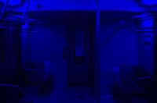
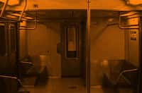

pre-production

Ultraa's logo
The idea for L originated as I was finishing my first film (which has yet to be printed) Answers from a Backyard S.E.T.I. This film was a non-sync film (meaning that sound is not synced to the picture when it is shot) fulfilling the initial requirements of the New School Film Certificate. The film consists of shots at a number of cinematic locations edited together and set to music. The track, Answers from a Backyard S.E.T.I., was recorded at a live performance of the band Ultraa in which I used a laptop computer to play samples.
After deciding to shoot the myth of Orpheus and Eurydice and set it on the L train, I began to plan how I would get the shots I needed. I was only allowed to have the Arriflex (crystal-sync camera) for three days. I realised that I had a number of logistic problems to solve before the shoot.
The original train interior was shot on a miniDV camera.

Which was then captured onto the computer and tinted blue.

This is the same shot tinted amber, made into a loop and burnt onto a video CD.
Shooting on the actual subway is either illegal or expensive. There is no way I could afford to get permission to shoot on the subway. Shooting all the dialogue scenes (in what needed to be an empty car) without being caught by the MTA officials was essentially impossible. The solution I came up with, was to back project the subway car and shoot the dialogue scenes in front of this projection. The problem with this was that if I used a film projector to back project I would need a huge space to generate a large enough image to fit behind them. With a video projector I was afraid that I would have sync lines (the lines that flicker when you shoot TV or computer screens, because of different frame rates and scanning frequencies). The solution was to shoot it on digital video and then project in off video CD in Pal format (Pal's 25fps is closer to sync film's 24fps than NTSC's 29.97fps). So, I went out and shot an empty subway car on miniDV, digitised it and colourised it in the computer, then change the frame rate and burnt it as a video CD.
I needed a number of other shots without dialogue (MOS), some in the subway itself. Rather than take the expensive Arriflex camera into the subway and attract unwelcome attention, I thought it would be better to use a cheaper bolex camera at a later date. One of the problems with shooting against a back projection is that the camera needs to be parallel to the background. This severely limited the camera setups and angles. I wanted to shoot these scenes using a tripod over handheld (steadi-cam was not an option). For the dialogue part of the shoot, I wanted to use classic framing techniques, starting with a mastershot (which due to space considerations was a two shot), Then moving in closer as the argument and the narrative progresses and then closer again, until the final extreme close up. Accompanying these changing camera setups was the lighting, which changed colour according to the setup (blue, amber and red). The narrative was ultimately cueing the camera position and the colour of the light.
Rehearsals began. The dialogue was stiff and difficult, but they did a good job enlivening the rigid words. We were ready to go into production.